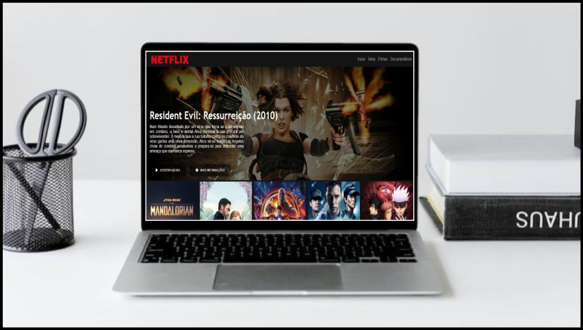
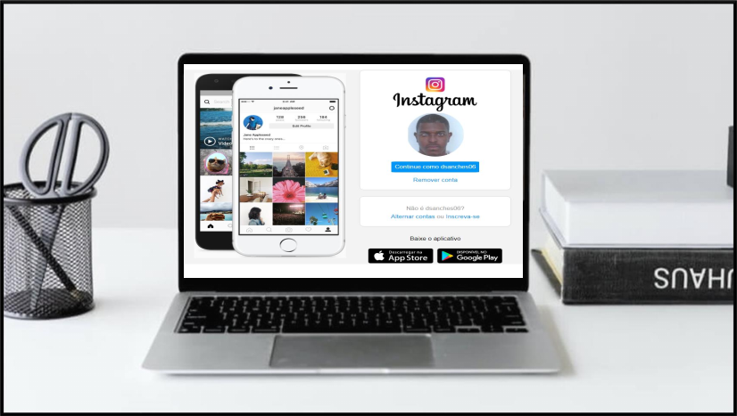
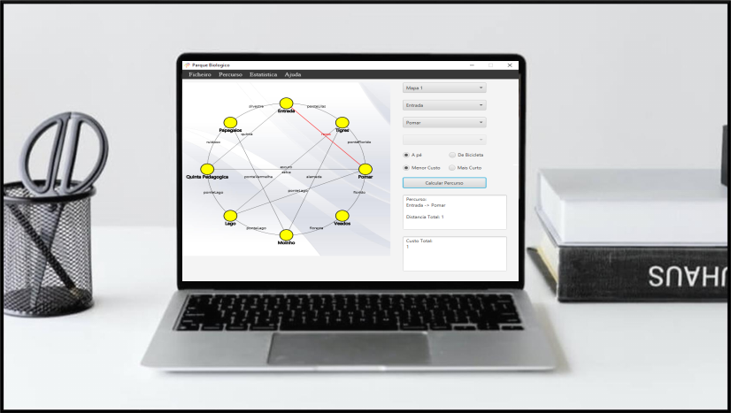

Sobre mim
Danilson Sanches. Apaixonado por artes e tecnologia, meu primeiro "Hello World" foi no IPS de Setúbal quando tive contato com HTML, CSS e um pouco de JavaScript e Notepad++. Atualmente estou a frequentar a formação Frontend Javascript na Universidade de Lisboa através do Programa de Requalificação da Upskill.
Formação
Frontend Javascript + IA
Nov 2025 - Atualmente
Faculdade de Ciências da Universidade de Lisboa
Curso Intensivo
Programa UPskill - Digital Skills & Jobs
Programa UPskill - Digital Skills & Jobs
Programação COBOL - Fundamentos
Abril 2022 - Jun 2022
Online - Diurno
Curso Intensivo
DUAL - Qualificação Profissional
DUAL - Qualificação Profissional
Frequência Universitária
Out 2011 - Jul 2015
Instituto Politécnico de Setúbal
Licenciatura Engenharia Informática de Gestão
Projetos

Clone da Netflix
Desafio do projeto
- estruturar um layout
- uso de técnicas de CSS3 com containers e variáveis
- utilização plugins Jquery
- uso de media queries para site responsivo
- posicionar os elementos com Flexbox

Interface inicial de instragram
Desafios do projeto
- Postagens relacionadas e em destaque;
- Filtragem por tags e categorias;
- Biografia do autor.

Parque Biologico
Descrição
- Calcular percursos a pé e de bicicleta dentro de um parque biológico;
- O utilizador deverá poder calcular o seu percurso de forma a minimizar a distancia, ou o custo do mesmo